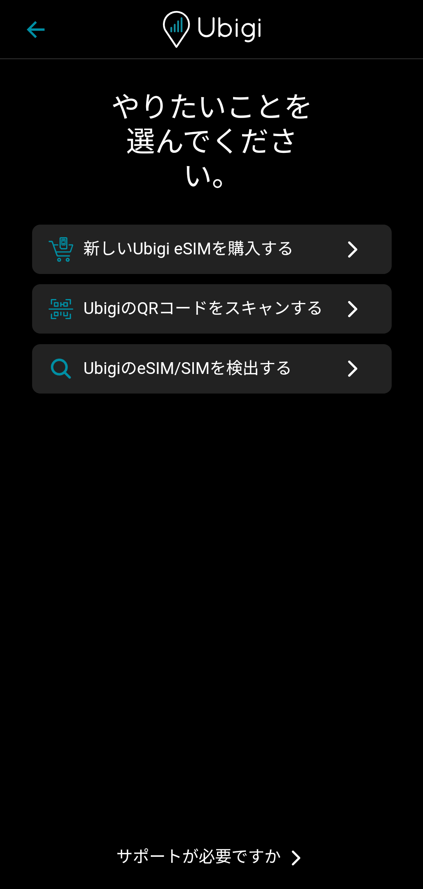
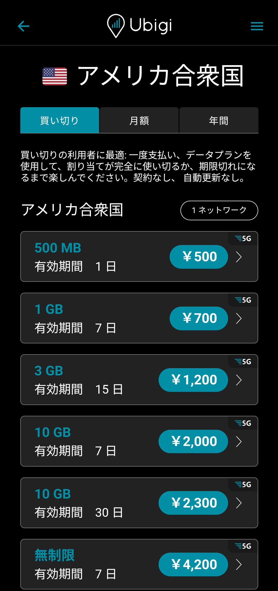
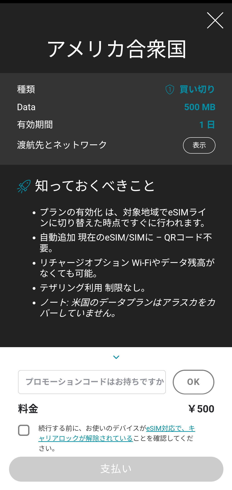
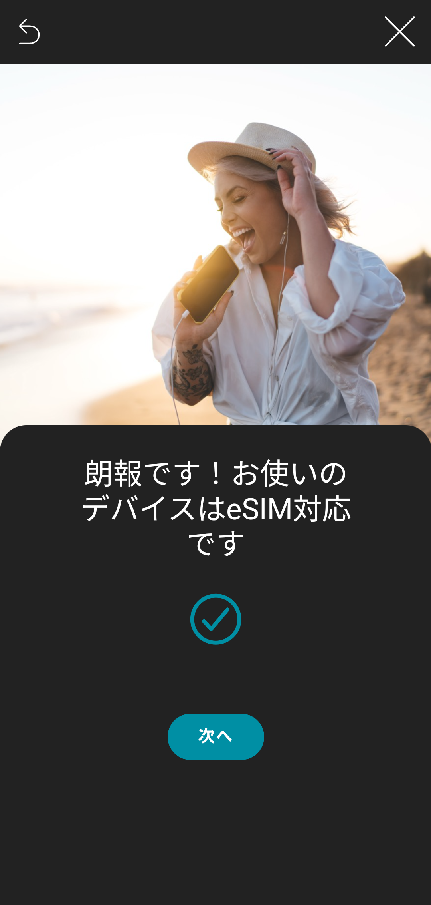
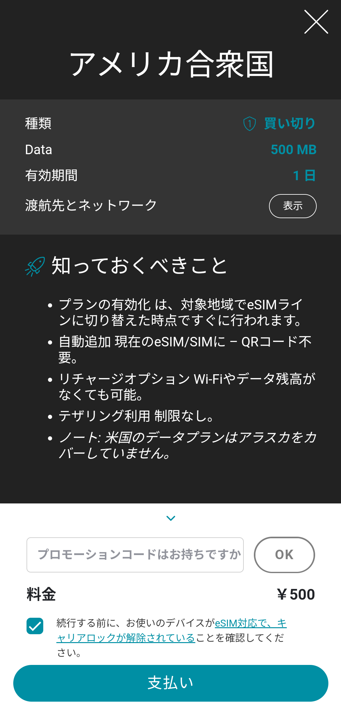

Nothing Phone･CMF Phoneのシャッター音を消す方法

全モデルでシャッター音が消せる
Nothing PhoneとCMF Phoneは本来シャッター音が消せるが、日本のSIMを追加するとシャッター音が消せなくなる。 しかし、日本のSIMを利用している状態でも海外のSIMを追加することで再びシャッター音が消せるようになる。 ここではeSIM対応モデルとeSIM非対応モデルに分けてそれぞれ方法を解説する。 Nothing PhoneとCMF Phoneは全モデルでnanoSIMが2枚利用でき、さらに2025年以降発売のモデルはeSIMが利用できる。 また、この方法はSIMフリー版とキャリア版関係なく全モデルで使える。
eSIM対応モデルの方法
1.Ubigiをインストールする
以下のリンクからUbigiをインストールする。 Ubigiは日本や海外で使えるプリペイドeSIMを提供している。
2.Ubigiを開く
3. "はじめに進む" をタップする

4. "次へ" をタップする

5. "同意して閉じる" をタップする

6.Ubigiのアカウントを登録する

7. "スマートフォン" をタップする

8. "新しいUbigi eSIMを購入する" をタップする

9.適当な国や地域のデータプランを選ぶ
2025年11月時点ではアメリカが最安になっている。


10. "次へ" をタップする

11.画面下のチェックボックスをタップする

12. "このデバイス" をタップする

13. "次へ" をタップする

14. "支払い" をタップし、支払いを完了させる


15. "ダッシュボードを見る" をタップする

16. "eSIMをインストール" をタップする

17. "続ける" をタップする

18. "はい" をタップする
これによりUbigiのeSIMが端末に追加される

19.カメラアプリを開く

20.設定画面を開く

21. "シャッター音" をオフにする
日本のSIMが無効になっている場合と最後に有効化したSIMが海外のSIMの場合はシャッター音の項目が現れる。

eSIM非対応モデルの方法
1.海外のSIMカードを挿入する
 Amazonより引用
Amazonより引用
海外のSIMカードを手に入れるにはECで海外のプリペイドSIMを購入するのが良い。
2.カメラアプリを開く
3.設定画面を開く
4. "シャッター音" をオフにする
日本のSIMが無効になっている場合と最後に有効化したSIMが海外のSIMの場合はシャッター音の項目が現れる。
シャッター音の項目が現れない場合
シャッター音をオフにしたあとはバッテリー消耗を抑えるために海外のSIMを無効化しても音は消えたままだが、海外のSIMが無効化されている状態で端末を再起動すると再びシャッター音の項目が消え、音がなるようになる。 それ以外でもこの項目が現れない場合、一度すべてのSIMを無効化してから日本のSIM、海外のSIMの順に有効化してカメラアプリを再起動してみる。 最後に有効化したSIMが海外SIMの場合にシャッター音の項目が現れ、音が消せるようになる。
デメリット
･海外のSIMを手に入れる必要がある
UbigiのeSIMを購入するにしても、海外のプリペイドSIMを購入するにしてもコストがかかる。
･海外のSIMを無効化した状態で再起動するとシャッター音が鳴るようになる
再起動のたびに海外のSIMを有効化してカメラアプリからシャッター音をオフにしてから海外のSIMを再び無効化するか、バッテリーの消費を犠牲にして海外のSIMを常に有効にするしかない。
･シャッター音が消せる状態はバグ
本来日本のSIMが有効になっている状態でシャッター音は消せないはずだが、最後に有効化したSIMが海外SIMの場合にシャッター音の項目が現れるのはもはやバグである。 よって、アップデートでこの方法が塞がれる可能性が他の機種より高いと思われる。
プロフィール

高度情報社会の最先端を駆け抜ける